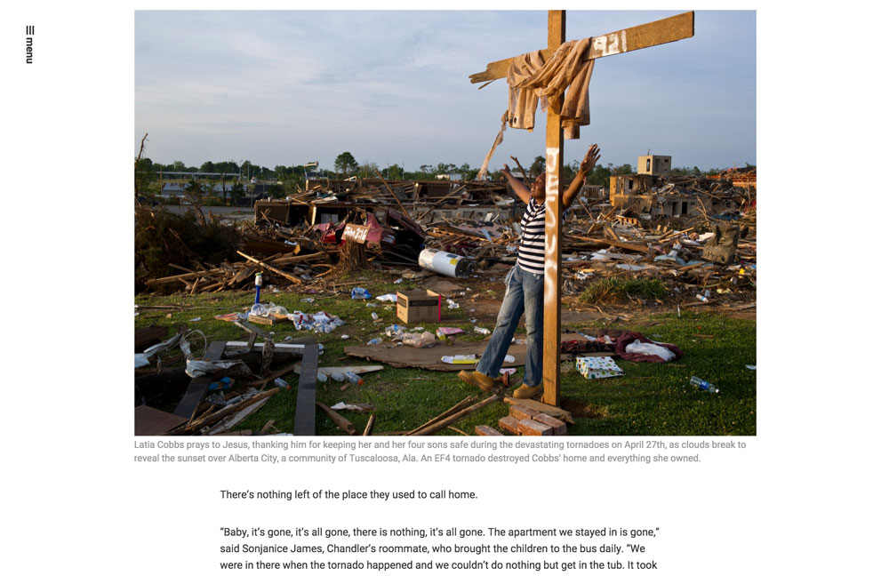

View on WordPress.org
Github Project
Installation
WordPress Settings
Customizer
Galleries
Blog Posts
Menus & Widgets
About Template
Parent Template
Story Template
Splash Page

Go to Pages > Add new
Select "Story Page" from the Template dropdown
For each image, insert a new gallery
Publish
« Previous
Next »